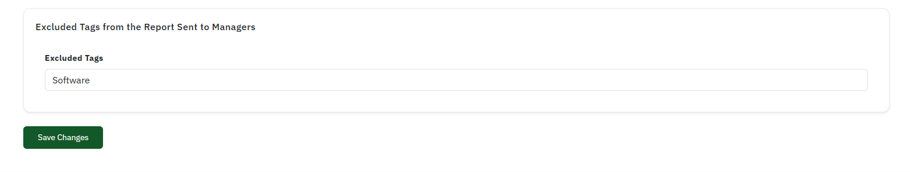

This guide explains the concept of excluded Categories and how they affect report generation and filtering. Excluded Categories are a powerful feature in Tamam that allows administrators to hide sensitive or irrelevant data from reports while maintaining data integrity.

Step 1: Understanding Excluded Categories
Excluded Categories are labels or markers that can be applied to employees, departments, or specific attendance records. When a tag is marked as "excluded," any data associated with that tag will be filtered out from standard reports and analytics.
Step 2: Managing Categories
Access the Categories Management section from your admin panel. Here you can create new Categories, edit existing ones, and designate which Categories should be treated as excluded. Categories can be applied manually or through automated rules based on employee attributes.
Step 3: Impact on Reports
Once Categories are set as excluded, they automatically filter out associated data from all standard reports. This is particularly useful for handling temporary employees, contractors, or sensitive personnel data that shouldn't appear in general management reports.
Step 4: Creating Exclusion Rules
Set up automated rules for tag exclusion. For example, you can create rules that automatically exclude data based on employment type, department, or custom criteria. This ensures consistent data filtering across all reports.
Step 5: Reviewing Excluded Data
Administrators with appropriate permissions can still access excluded data through special admin-only reports. This maintains data accessibility for compliance and auditing purposes while keeping sensitive information out of standard views.
Best Practice: Use excluded Categories carefully and document their purpose. Regular audits of tag usage help maintain data integrity and ensure compliance with privacy regulations.